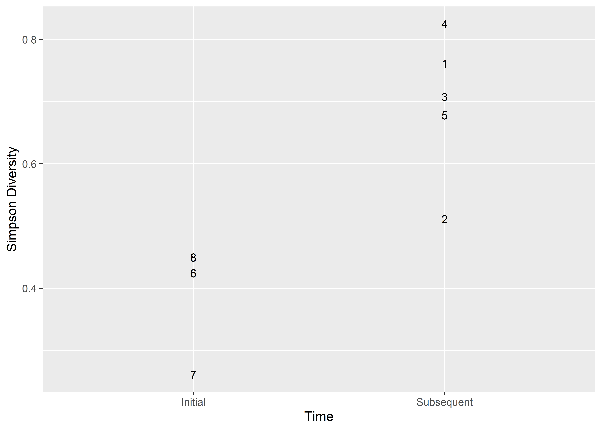
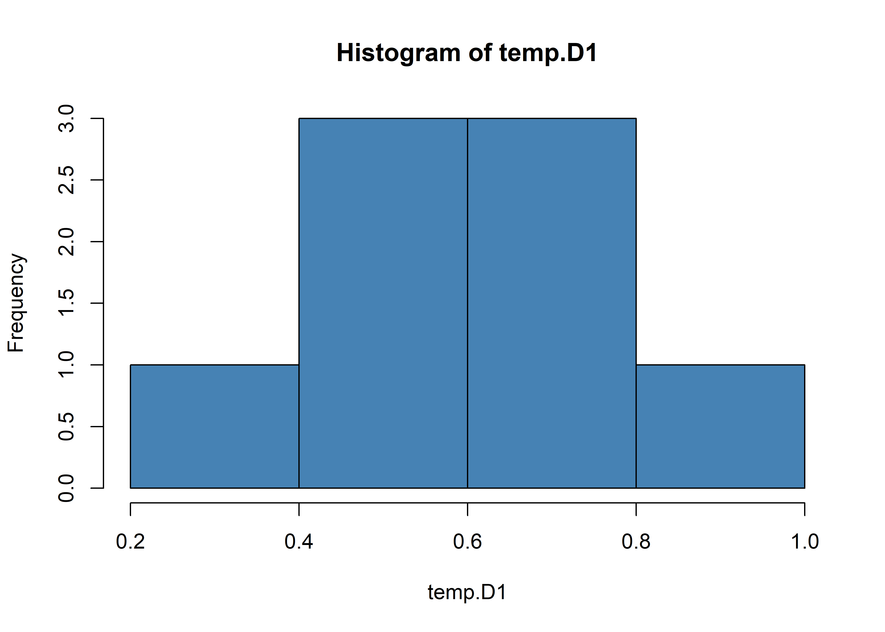

Chapter 3 Composition & Diversity
This analysis of assemblage diversity is limited to Caddo mortuary contexts at the Mounds Plantation, George C. Davis, and Gahagan Mound sites where Gahagan bifaces were recovered.
3.1 Taxonomic composition
library(here)## here() starts at E:/github/gahaganmorph.3/supplibrary(tidyverse)## -- Attaching packages -------------------------------------------- tidyverse 1.3.1 --## v ggplot2 3.3.5 v purrr 0.3.4
## v tibble 3.1.6 v dplyr 1.0.7
## v tidyr 1.1.4 v stringr 1.4.0
## v readr 2.1.1 v forcats 0.5.1## -- Conflicts ----------------------------------------------- tidyverse_conflicts() --
## x dplyr::filter() masks stats::filter()
## x dplyr::group_rows() masks kableExtra::group_rows()
## x dplyr::lag() masks stats::lag()# read data
data <- read.csv("gahagan-diversity.csv")
# table of diagnostics
knitr::kable(data)| context | region | adult_male | adult_female | uid_adult | total_adult | juvenile_male | juvenile_female | uid_juvenile | total_juvenile | alba | celt | catahoula | friley | gahagan | hayes | harrell | reed | scallorn | coles_creek | hickory_engraved | holly_fine_engraved | kiam_incised | ceramic_bottle | ceramic_bowl | lithics | ceramics |
|---|---|---|---|---|---|---|---|---|---|---|---|---|---|---|---|---|---|---|---|---|---|---|---|---|---|---|
| 41CE19-F134 | South | 0 | 2 | 4 | 6 | 0 | 0 | 1 | 1 | 157 | 10 | 0 | 0 | 16 | 1 | 0 | 0 | 0 | 0 | 0 | 0 | 0 | 0 | 0 | 184 | 0 |
| 41CE19-F119 | South | 1 | 1 | 2 | 4 | 0 | 0 | 0 | 0 | 5 | 3 | 0 | 0 | 12 | 1 | 0 | 0 | 0 | 0 | 0 | 2 | 0 | 1 | 1 | 21 | 2 |
| 16RR1-BP2 | South | 2 | 2 | 0 | 4 | 0 | 1 | 0 | 1 | 31 | 14 | 0 | 0 | 16 | 8 | 2 | 16 | 19 | 0 | 1 | 1 | 1 | 1 | 2 | 106 | 3 |
| 16RR1-BP3 | South | 1 | 0 | 1 | 2 | 0 | 0 | 1 | 1 | 89 | 3 | 0 | 0 | 15 | 0 | 0 | 0 | 11 | 0 | 0 | 1 | 0 | 1 | 0 | 118 | 1 |
| 16CD12-BP1 | North | 1 | 0 | 1 | 2 | 0 | 0 | 1 | 1 | 35 | 1 | 2 | 1 | 1 | 3 | 0 | 0 | 0 | 1 | 1 | 1 | 0 | 0 | 2 | 43 | 3 |
| 16CD12-BP2 | North | 0 | 0 | 1 | 1 | 0 | 0 | 0 | 0 | 1 | 0 | 0 | 0 | 8 | 4 | 0 | 0 | 0 | 0 | 0 | 0 | 0 | 0 | 0 | 13 | 0 |
| 16CD12-BP5 | North | 3 | 8 | 1 | 12 | 0 | 0 | 9 | 9 | 12 | 0 | 0 | 1 | 2 | 9 | 0 | 0 | 19 | 0 | 0 | 0 | 0 | 0 | 0 | 43 | 0 |
| 16CD12-BP8 | North | 0 | 0 | 1 | 1 | 0 | 0 | 0 | 0 | 0 | 0 | 4 | 0 | 1 | 0 | 0 | 0 | 1 | 0 | 1 | 1 | 0 | 0 | 2 | 6 | 2 |
3.2 Alpha diversity
library(vegan)## Loading required package: permute##
## Attaching package: 'permute'## The following object is masked from 'package:seriation':
##
## permute## This is vegan 2.5-7# assemblage size (N)
N <- rowSums(data[11:25])
N ## assemblage sizes range from:## [1] 184 25 112 120 48 13 43 10# how many of each type were found?
T <- colSums(data[11:25])
T## alba celt catahoula friley
## 330 31 6 2
## gahagan hayes harrell reed
## 71 26 2 16
## scallorn coles_creek hickory_engraved holly_fine_engraved
## 50 1 3 6
## kiam_incised ceramic_bottle ceramic_bowl
## 1 3 7## richness (S) = number of types in assemblage
S <- specnumber(data[11:25])
S## [1] 4 7 12 6 10 3 5 6## ubiquity (U) = number of assemblages that contain a particular type
U <- specnumber(data[11:25])
U## [1] 4 7 12 6 10 3 5 63.3 Relative abundance
# mean number of observations for each type
colMeans(data[11:25])## alba celt catahoula friley
## 41.250 3.875 0.750 0.250
## gahagan hayes harrell reed
## 8.875 3.250 0.250 2.000
## scallorn coles_creek hickory_engraved holly_fine_engraved
## 6.250 0.125 0.375 0.750
## kiam_incised ceramic_bottle ceramic_bowl
## 0.125 0.375 0.875# data by percentage
data.pct <- data[11:25]/N*100
## mean percent (Mp) of each type across assemblage
Mp <- colMeans(data.pct)
Mp## alba celt catahoula friley
## 39.4609095 4.3147645 5.5208333 0.5511143
## gahagan hayes harrell reed
## 20.2192905 8.7044748 0.2232143 1.7857143
## scallorn coles_creek hickory_engraved holly_fine_engraved
## 10.0396249 0.2604167 1.6220238 2.7261905
## kiam_incised ceramic_bottle ceramic_bowl
## 0.1116071 0.7157738 3.7440476## percentage of sites that have each type
Up <- U/length(N)*100
Up## [1] 50.0 87.5 150.0 75.0 125.0 37.5 62.5 75.03.3.1 Relative abundance by context
library(dplyr)
library(reshape)##
## Attaching package: 'reshape'## The following object is masked from 'package:dplyr':
##
## rename## The following objects are masked from 'package:tidyr':
##
## expand, smithslibrary(ggplot2)
library(ggpubr)
library(ggExtra)
library(wesanderson)
# relative abundance of juvenile and adult burials
pal <- wes_palette("Moonrise2", 2, type = "continuous")
burials <- data %>%
select(context, total_adult, total_juvenile) %>%
mutate(context = paste(context, c("(S)", "(S)", "(S)", "(S)",
"(N)", "(N)", "(N)", "(N)"))) %>%
melt(id.vars = "context")
# configure plot
plot0 <- burials %>%
arrange(context) %>%
mutate(context = factor(context, levels = c(
"16CD12-BP1 (N)", "41CE19-F134 (S)", "16RR1-BP3 (S)",
"16CD12-BP5 (N)", "16RR1-BP2 (S)", "41CE19-F119 (S)",
"16CD12-BP2 (N)", "16CD12-BP8 (N)"))) %>%
ggplot(aes(x=context, y = value, fill = variable)) +
geom_bar(stat="identity", position = "fill") +
coord_flip() +
scale_fill_manual(values = pal) +
labs(x = "Context",
y = "Relative abundance (%)",
fill = "Category")
# relative abundance of burials by category
pal <- wes_palette("Moonrise2", 6, type = "continuous")
burials <- data %>%
select(context, adult_male:uid_adult, juvenile_male:uid_juvenile) %>%
mutate(context = paste(context, c("(S)", "(S)", "(S)", "(S)",
"(N)", "(N)", "(N)", "(N)"))) %>%
melt(id.vars = "context")
# configure plot
plot00 <- burials %>%
arrange(context) %>%
mutate(context = factor(context, levels = c(
"16CD12-BP1 (N)", "41CE19-F134 (S)", "16RR1-BP3 (S)",
"16CD12-BP5 (N)", "16RR1-BP2 (S)", "41CE19-F119 (S)",
"16CD12-BP2 (N)", "16CD12-BP8 (N)"))) %>%
ggplot(aes(x=context, y = value, fill = variable)) +
geom_bar(stat="identity", position = "fill") +
coord_flip() +
scale_fill_manual(values = pal) +
labs(x = "Context",
y = "Relative abundance (%)",
fill = "Category")
# render figure
figure <- ggarrange(plot0, plot00,
labels = c("a","b"),
ncol = 1, nrow = 2)
# plot figure
figure(#fig:plot.burial.diversity)Relative abundance of age and sex data associated with burials. For this undertaking, the term juvenile encompassess all age categories from fetus to sub-adult. Contexts ordered temporally from bottom to top based upon seriation results provided in the previous chapter. The middle two contexts (16RR1-BP2 and 16CD12-BP5) are interchangeable.
# relative abundance of lithics + ceramics
pal <- wes_palette("Moonrise2", 2, type = "continuous")
cerlith <- data %>%
select(context, lithics, ceramics) %>%
mutate(context = paste(context, c("(S)", "(S)", "(S)", "(S)",
"(N)", "(N)", "(N)", "(N)"))) %>%
melt(id.vars = "context")
# configure plot
plot1 <- cerlith %>%
arrange(context) %>%
mutate(context = factor(context, levels = c(
"16CD12-BP1 (N)", "41CE19-F134 (S)", "16RR1-BP3 (S)",
"16CD12-BP5 (N)", "16RR1-BP2 (S)", "41CE19-F119 (S)",
"16CD12-BP2 (N)", "16CD12-BP8 (N)"))) %>%
ggplot(aes(x=context, y = value, fill = variable)) +
geom_bar(stat="identity", position = "fill") +
coord_flip() +
scale_fill_manual(values = pal) +
labs(x = "Context",
y = "Relative abundance (%)",
fill = "Category")
# relative abundance of diagnostic types
pal <- wes_palette("Moonrise2", 17, type = "continuous")
diagnostics <- data %>%
select(context, alba:ceramic_bowl) %>%
mutate(context = paste(context, c("(S)", "(S)", "(S)", "(S)",
"(N)", "(N)", "(N)", "(N)"))) %>%
melt(id.vars = "context")
# configure plot
plot2 <- diagnostics %>%
arrange(context) %>%
mutate(context = factor(context, levels = c(
"16CD12-BP1 (N)", "41CE19-F134 (S)", "16RR1-BP3 (S)",
"16CD12-BP5 (N)", "16RR1-BP2 (S)", "41CE19-F119 (S)",
"16CD12-BP2 (N)", "16CD12-BP8 (N)"))) %>%
ggplot( aes(x=context, y = value, fill = variable)) +
geom_bar(stat="identity", position = "fill") +
coord_flip() +
scale_fill_manual(values = pal) +
labs(x = "Context",
y = "Relative abundance (%)",
fill = "Types") +
theme(legend.key.height = unit(0.05, "cm"))
# render figure
figure <- ggarrange(plot1, plot2,
labels = c("c","d"),
ncol = 1, nrow = 2)
# plot figure
figure
(#fig:plot.alpha.diversity)Relative abundance of associated diagnostics. Contexts ordered temporally from bottom to top based upon seriation results provided in the previous chapter. The middle two contexts (16RR1-BP2 and 16CD12-BP5) are interchangeable.
3.4 Diversity indices
# diversity - diagnostics
# Simpson diversity
data$D1 <- diversity(data[11:25], index = "simpson")
D1 <- data$D1
# evenness - diagnostics
# Shannon diversity
data$H <- diversity(data[11:25])
H <- data$H
# Pielou's J (Shannon diversity index divided by natural log of richness)
data$J <- H/log(S)
J <- data$J3.5 Beta diversity - diagnostics
# summarize assemblage diversity to identify high & low diversity assemblages
library(maptools)## Loading required package: sp## Checking rgeos availability: TRUE
## Please note that 'maptools' will be retired by the end of 2023,
## plan transition at your earliest convenience;
## some functionality will be moved to 'sp'.pch <- c(1, 3)[as.factor(data$region)]
plot(D1, J,
pch = pch)
abline(h = median(J),
v = median(D1),
lty = 2)
pointLabel(D1, J,
rownames(data),
cex = .75)
leg.txt <- c(as.expression(bquote("Northern Behavioral Region")),
as.expression(bquote("Southern Behavioral Region")))
legend("bottomright",
leg.txt,
pch = c(1, 3))
Figure 3.1: Caddo burial assemblages that include Gahagan bifaces; 1, 41CE19-F134; 2, 41CE19-F119; 3, 16RR1-BP2; 4, 16RR1-BP3; 5, 16CD12-BP1; 6, 16CD12-BP2; 7, 16CD12-BP5; 8, 16CD12-BP8. The three sites in the lower part of the left quadrat exhibit lower diversity and evenness, and each represents the earliest context at each site to include a Gahagan biface. Those sites in the upper right quadrat have higher diversity and evenness, and occur later than those in the lower left quadrat.
3.5.1 Diversity through time
The figure above shows higher diversity and evenness in later contexts. Is there a significant increase in diversity between the initial burial context at each site that included Gahagan bifaces, and those that occur later?
# diversity
# mutate data to add temporal assignment
temp <- data %>%
mutate(temporal = c(1, 2, 2, 1, 1, 2, 2, 2), .after = region)
# table of diagnostics
knitr::kable(temp, "pipe")| context | region | temporal | adult_male | adult_female | uid_adult | total_adult | juvenile_male | juvenile_female | uid_juvenile | total_juvenile | alba | celt | catahoula | friley | gahagan | hayes | harrell | reed | scallorn | coles_creek | hickory_engraved | holly_fine_engraved | kiam_incised | ceramic_bottle | ceramic_bowl | lithics | ceramics | D1 | H | J |
|---|---|---|---|---|---|---|---|---|---|---|---|---|---|---|---|---|---|---|---|---|---|---|---|---|---|---|---|---|---|---|
| 41CE19-F134 | South | 1 | 0 | 2 | 4 | 6 | 0 | 0 | 1 | 1 | 157 | 10 | 0 | 0 | 16 | 1 | 0 | 0 | 0 | 0 | 0 | 0 | 0 | 0 | 0 | 184 | 0 | 0.2614012 | 0.5344039 | 0.3854909 |
| 41CE19-F119 | South | 2 | 1 | 1 | 2 | 4 | 0 | 0 | 0 | 0 | 5 | 3 | 0 | 0 | 12 | 1 | 0 | 0 | 0 | 0 | 0 | 2 | 0 | 1 | 1 | 21 | 2 | 0.7040000 | 1.5169478 | 0.7795570 |
| 16RR1-BP2 | South | 2 | 2 | 2 | 0 | 4 | 0 | 1 | 0 | 1 | 31 | 14 | 0 | 0 | 16 | 8 | 2 | 16 | 19 | 0 | 1 | 1 | 1 | 1 | 2 | 106 | 3 | 0.8321110 | 1.9731801 | 0.7940661 |
| 16RR1-BP3 | South | 1 | 1 | 0 | 1 | 2 | 0 | 0 | 1 | 1 | 89 | 3 | 0 | 0 | 15 | 0 | 0 | 0 | 11 | 0 | 0 | 1 | 0 | 1 | 0 | 118 | 1 | 0.4251389 | 0.8726411 | 0.4870303 |
| 16CD12-BP1 | North | 1 | 1 | 0 | 1 | 2 | 0 | 0 | 1 | 1 | 35 | 1 | 2 | 1 | 1 | 3 | 0 | 0 | 0 | 1 | 1 | 1 | 0 | 0 | 2 | 43 | 3 | 0.4583333 | 1.1523342 | 0.5004524 |
| 16CD12-BP2 | North | 2 | 0 | 0 | 1 | 1 | 0 | 0 | 0 | 0 | 1 | 0 | 0 | 0 | 8 | 4 | 0 | 0 | 0 | 0 | 0 | 0 | 0 | 0 | 0 | 13 | 0 | 0.5207101 | 0.8587409 | 0.7816597 |
| 16CD12-BP5 | North | 2 | 3 | 8 | 1 | 12 | 0 | 0 | 9 | 9 | 12 | 0 | 0 | 1 | 2 | 9 | 0 | 0 | 19 | 0 | 0 | 0 | 0 | 0 | 0 | 43 | 0 | 0.6803678 | 1.2745830 | 0.7919429 |
| 16CD12-BP8 | North | 2 | 0 | 0 | 1 | 1 | 0 | 0 | 0 | 0 | 0 | 0 | 4 | 0 | 1 | 0 | 0 | 0 | 1 | 0 | 1 | 1 | 0 | 0 | 2 | 6 | 2 | 0.7600000 | 1.6094379 | 0.8982444 |
# attributes for plots
temp.D1 <- temp$D1
temp.J <- temp$J
time <- temp$temporal
#diversity
## plot diversity
ggplot(temp, aes(x = time, y = temp.D1)) +
geom_point(aes(shape = factor(context))) +
scale_shape_manual(values = c(0:5,15,17)) +
geom_smooth(method = "lm")## `geom_smooth()` using formula 'y ~ x'
# are data not normally distributed?
shapiro.test(temp.D1)##
## Shapiro-Wilk normality test
##
## data: temp.D1
## W = 0.955, p-value = 0.7613hist(temp.D1, col='steelblue')
# MODEL: D1 as a function of initial v. later contexts
temp.simpson <- aov(temp.D1 ~ time,
data = temp)
# ANOVA: do temporal contexts differ by D1?
summary(temp.simpson)## Df Sum Sq Mean Sq F value Pr(>F)
## time 1 0.18938 0.18938 14.98 0.00826 **
## Residuals 6 0.07583 0.01264
## ---
## Signif. codes: 0 '***' 0.001 '**' 0.01 '*' 0.05 '.' 0.1 ' ' 13.5.2 Evenness through time
The figure above shows higher diversity and evenness in later contexts. Is there a significant increase in evenness between the initial burial context at each site that included Gahagan bifaces, and those that occur later?
# evenness
## plot evenness
ggplot(temp, aes(x = time, y = temp.J)) +
geom_point(aes(shape = factor(context))) +
scale_shape_manual(values = c(0:5,15,17)) +
geom_smooth(method = "lm")## `geom_smooth()` using formula 'y ~ x'
# are data not normally distributed?
shapiro.test(temp.J)##
## Shapiro-Wilk normality test
##
## data: temp.J
## W = 0.84242, p-value = 0.07976hist(temp.J, col='steelblue')# MODEL: J as a function of initial v. later contexts
temporal.J <- anosim(temp.J,
grouping = time,
permutations = 10000)
# ANOSIM: do temporal contexts differ by J?
summary(temporal.J)##
## Call:
## anosim(x = temp.J, grouping = time, permutations = 10000)
## Dissimilarity: bray
##
## ANOSIM statistic R: 1
## Significance: 0.016298
##
## Permutation: free
## Number of permutations: 10000
##
## Upper quantiles of permutations (null model):
## 90% 95% 97.5% 99%
## 0.221 0.272 0.436 1.000
##
## Dissimilarity ranks between and within classes:
## 0% 25% 50% 75% 100% N
## Between 14 17.50 21.0 24.50 28 15
## 1 7 9.50 12.0 12.50 13 3
## 2 1 3.25 5.5 8.75 11 10